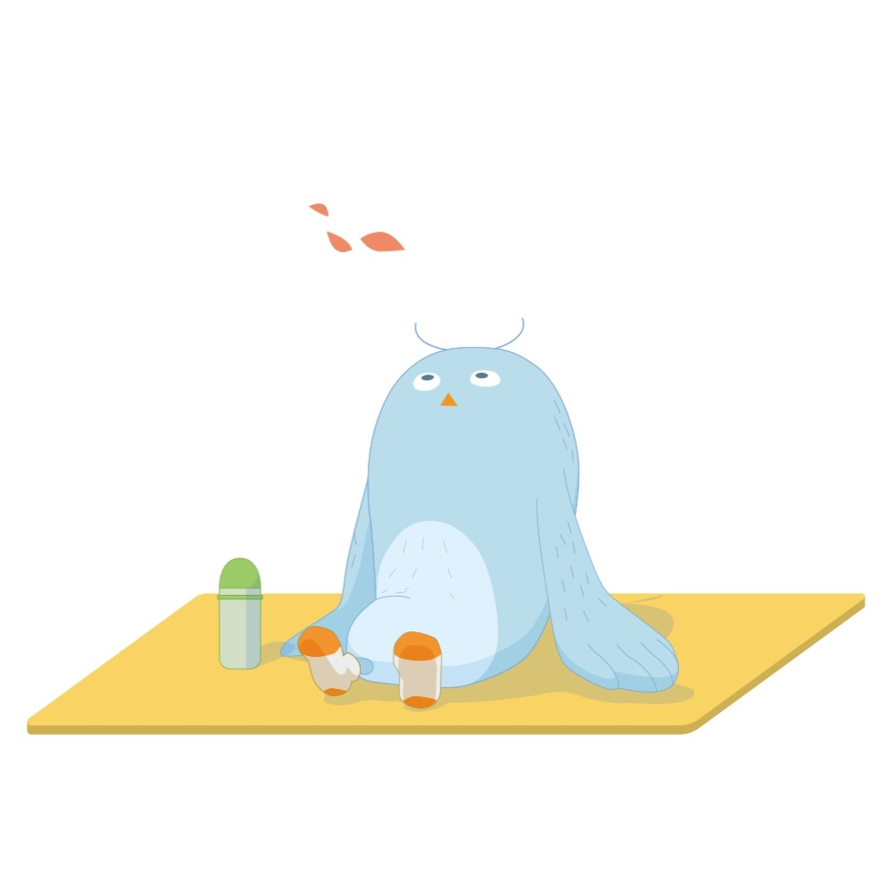

HAPPY BUDDY DAY !
00
:
00
pm
여행 성향 테스트 결과
순간 포착가
즉흥적인 여행 기록자

당신은 여행을 즉흥적으로 즐기면서, 그 순간을 사진으로 기록하는 여행자입니다. 여행지에서 일어나는 예상치 못한 상황과 순간을 즐기며, 바로 그 순간을 포착하는 것이 중요해요. 철저한 계획보다는 그 순간의 자연스러움을 담고, 기억에 남을 만한 장면을 놓치지 않으려고 합니다.
Tips
즉흥적으로 멋진 사진을 찍을 수 있는 장소를 여행지로 선택해 탐험하세요.
액션캠이나 간편한 카메라를 활용하면 활동 중에도 생생한 장면을 남길 수 있어요.
Best Spots
스페인 바르셀로나: 다채로운 건축물과 거리 예술이 넘쳐나는 곳입니다.
모로코 마라케시: 즉흥적인 탐방과 촬영이 잘 어울리는 매력적인 도시입니다.
페루 마추픽추: 멋진 풍경을 즉흥적으로 담을 수 있는 여행지입니다.